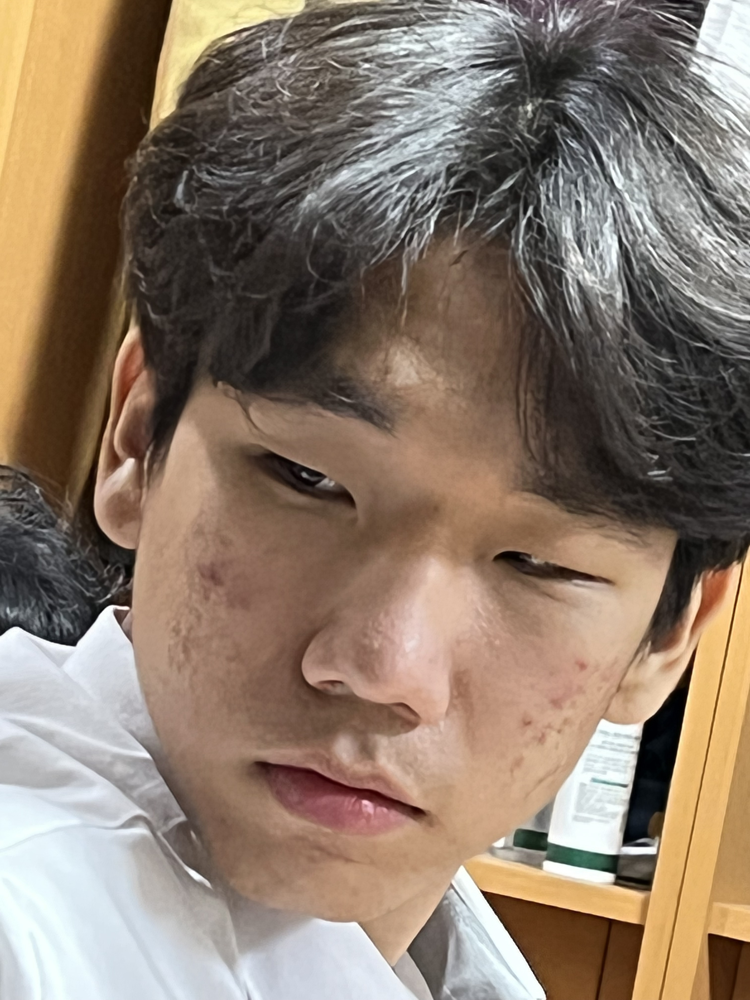
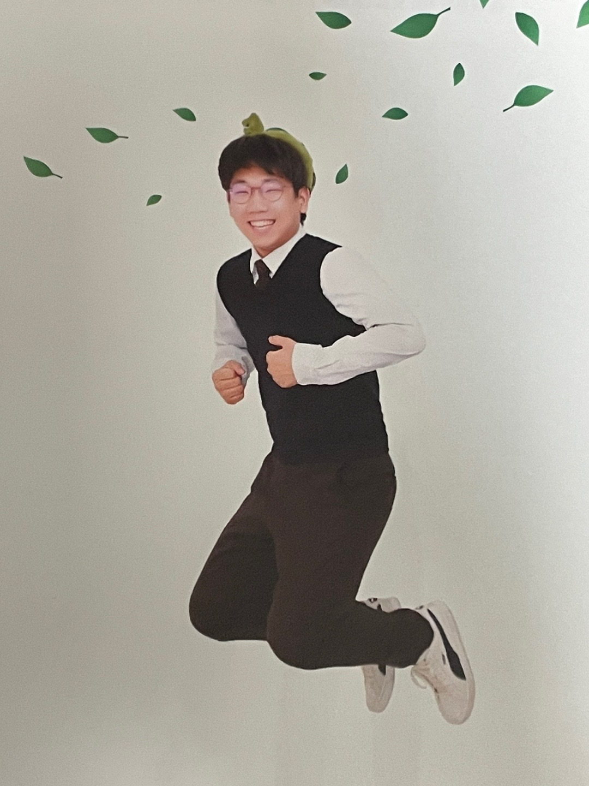

이 머리는 고등학교 2학년 때 방학 때 파마를 했을 때 머리임.
이 때 얘들이 마스크 쓰고 눈만 보면 분위기 좋다고 좋다고 난리였지 ㅋㅋㅋ (미안)
이 사진 보니까 다시 파마 하고 싶긴 하다~
이 머리는 고3 때 미용실 갔다 와서 머리 망쳤을 때인데
미용실 갔는데 원래 해주던 선생님이 아니라 새로 오신 분이 하신다 그래서 네~! 알겠습니다 했지
그렇게 자르다가 나는 조금 머리가 가벼운게 좋은데 약간 무거웠단 말이지
그래서 내가 아는 가볍게 만드는건 숯치는거 말곤 없어서... 계에속.. 숯을 쳐달라고 ... 했어..
뭔가 내가 알던 머리가 안되는거지.. 근데 그것도 모르고 계속 또 쳐달라고 해서 만들어진 머리임..
저 때 기숙사 가자마자 얘들이 나보고 머리 왜 그따구냐고 미용실 찾아가서 박살내야겠다고 그랬는뎈ㅋㅋ
미처 내가 숯쳐달라고 말을 못하겠는거지 ㅋㅋㅋ... 그래서 새로운 신입이 짤랐다고,, 변명을 했따..
그랬으면 안됐는뒈..ㅜㅜ (미안해요 머리해주신 선생님..!)
그래도 지금은 앞머리 층내달라고 말한다 ~~ 많은 성장을 이루었다~

키야~ 너무 자랑스러운 사진이다 이거는 ~~
이 사진으로 말할것 같으면 무려 점프를 한 사진이라고~
나처럼 찍은사람 아무도 없을걸 ~~
사실은 사진 찍으시는 분이 나보고 점프 하라고 시키긴 했는데...ㅎ
그때 당시에는 에라 모르겠다 하고 찍었지만 지금 와서 보니 매우 잘 찍었다 생각이 들잖아~